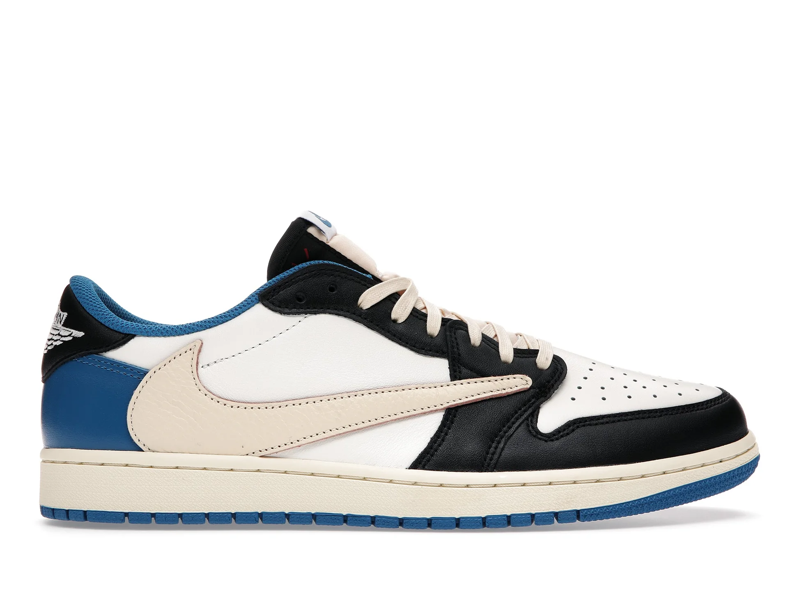
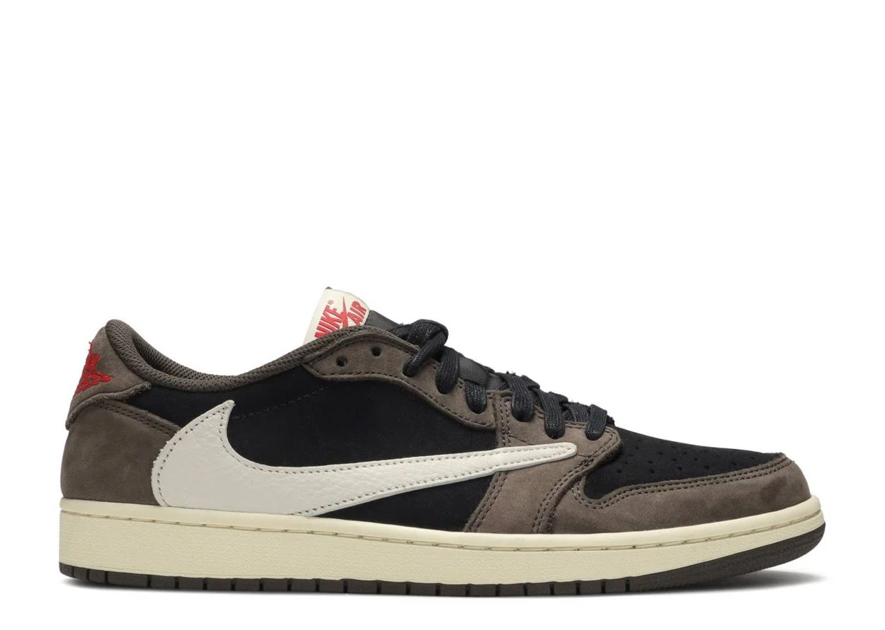
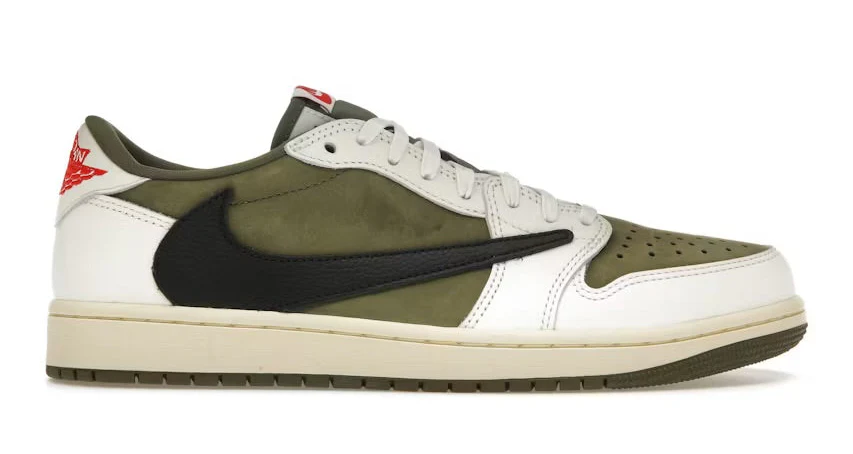
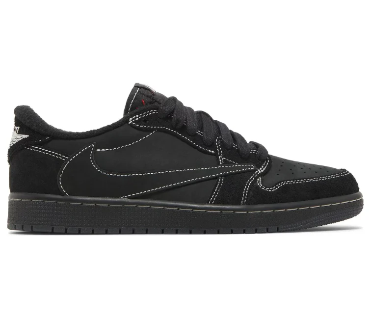
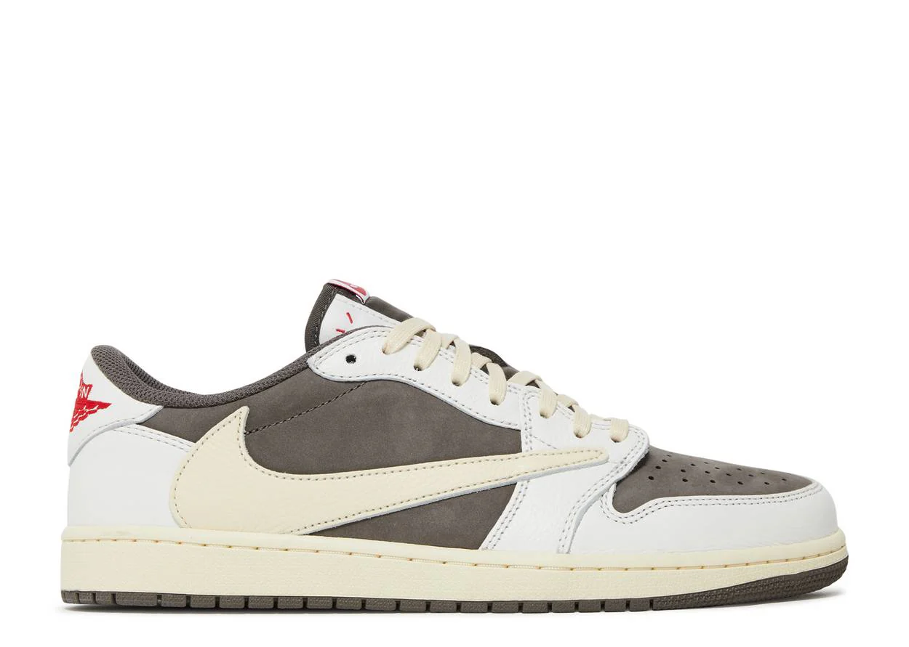

Jordan 1 Retro Low OG SP Fragment x Travis Scott Men's

$6.816.675 COP
El Air Jordan 1 Low Fragment Design x Travis Scott hace un guiño al Air Jordan 1 Fragment original de 2016 con su sencillo bloque de color. Presenta una parte superior de cuero blanco liso con superposiciones de cuero negro y azul real. A partir de ahí, un Swoosh invertido característico y suelas amarillentas añaden un estilo Cactus Jack a la silueta clásica.
El Air Jordan 1 Low Fragment Design x Travis Scott se lanzó en agosto de 2021 y se vendió por $150.
Jordan 1 Retro Low OG SP x Travis Scott Mocha

$6.330.946 COP
Aprovechando el éxito de sus colaboraciones anteriores, Travis Scott agrega otro nuevo diseño a su relación de colaboración con Jumpman a través del Air Jordan 1 Low Travis Scott, ahora disponible en Snkr Store. Travis adelantó el lanzamiento de este zapato durante su gira Astroworld, dejando a los fanáticos tanto de su música como de la marca Jordan con una pregunta: ¿Cuándo saldrán estos zapatos? La noche del viernes 19 de julio de 2019, Travis respondió a las masas poniéndolos a disposición en su sitio web, con un lanzamiento en la aplicación SNKRS al día siguiente.
Jordan 1 Retro Low OG SP x Travis Scott Medium Olive

$2.177.557 COP
Las Jordan 1 Retro Low OG SP Travis Scott Medium Olive continúan la codiciada colaboración entre Jordan Brand y Travis Scott, ofreciendo a los amantes de las zapatillas una nueva versión de una silueta clásica. Vestido en una llamativa combinación de colores de oliva medio, negro, vela y muselina, este diseño de caña baja es reconocible al instante con su icónico swoosh invertido, un elemento característico de la asociación Travis Scott x Jordan. La construcción de cuero y gamuza de primera calidad proporciona un contraste táctil, mientras que el llamativo logotipo de alas rojas de Jordan en el talón y la marca Cactus Jack en el lado medio realzan el estilo distintivo de la zapatilla.
Jordan 1 Retro Low OG SP x Travis Scott Phantom

$5.013.714 COP
La silueta regresó con su firma Nike Swoosh al revés pero con un nuevo diseño de puntadas en contraste. Las zapatillas de nobuck totalmente negras tienen un logotipo de Nike Air en la lengüeta y un logotipo de Air Jordan Wings en la pestaña del talón derecho. Se incluyen cordones rojos, negros y blanco/negro y una abeja bordada está ubicada en la pestaña del talón de la zapatilla izquierda inspirada en la hija de Travis, Stormi.
Jordan 1 Retro Low OG SP x Travis Scott Reverse

$5.721.842 COP
Haciendo un guiño al Air Jordan 1 High Travis Scott Mocha, el Air Jordan 1 Low Travis Scott Reverse Mocha ofrece una paleta similar de moca y blanquecino, pero con un bloque de color de estilo inverso. Su parte superior está construida con una base Mocha Durabuck, superposiciones de cuero blanco y los característicos Swooshes inversos. Los toques de rojo en el bordado del talón con el logotipo Wings y la etiqueta tejida en la lengüeta crean un marcado contraste con el aspecto neutro del diseño. A partir de ahí, una suela Air amarillenta añade un toque vintage.